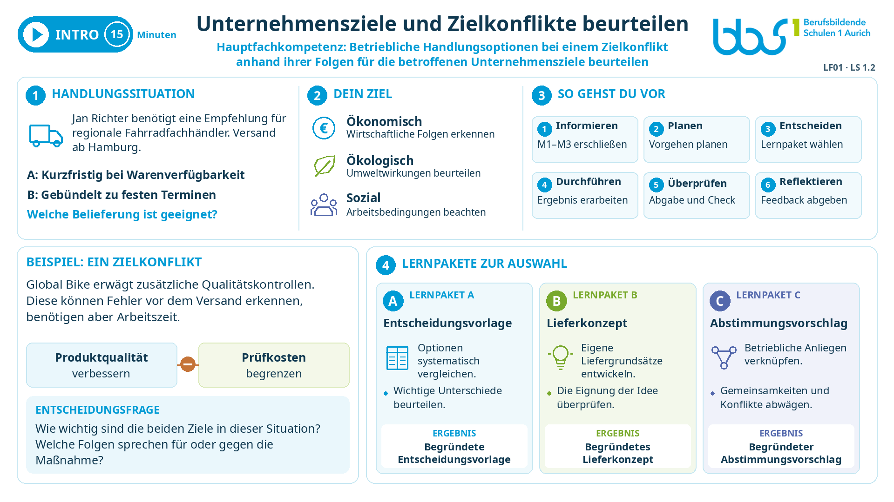
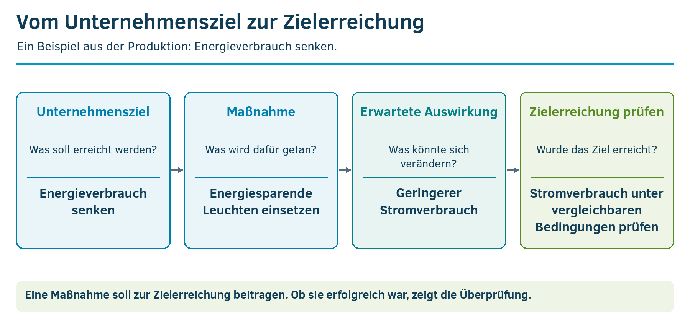
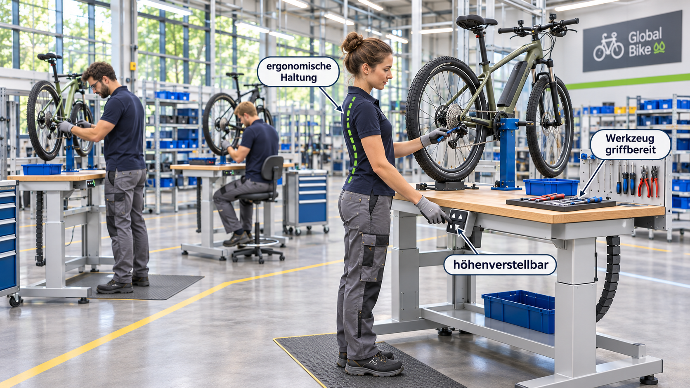
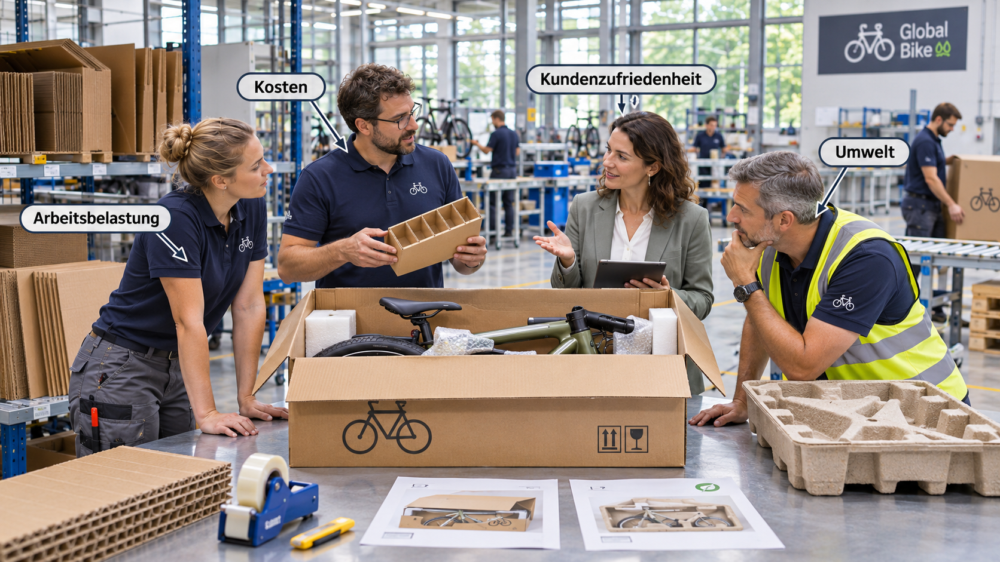

Ziele im Fall identifizieren
Notiere für die beiden Liefermodelle mindestens vier relevante Ziele aus allen drei Zielarten. Unterscheide Ziel und Maßnahme mit M1 · Zielarten.
Notizen


Bei einem regionalen Händler ist Zubehör ausverkauft. Anderen Händlern reicht eine Lieferung zum vereinbarten Sammeltermin. Global Bike muss entscheiden, wie der Vertrieb Kundenwünsche, Kosten, Umweltwirkungen und Arbeitsbedingungen bei der Belieferung berücksichtigen soll. Du bereitest die Entscheidung für Jan Richter und die Geschäftsleitung vor.
Jan Richter erhält für die Geschäftsleitung ein begründetes Urteil zur Belieferung ab Hamburg. Du erstellst entweder eine Entscheidungsvorlage, ein Lieferkonzept oder einen betrieblichen Abstimmungsvorschlag. Halte die wichtigsten Gründe für eine kurze Vorstellung bereit.
Du entscheidest, welche Aufgaben du selbstständig oder mit anderen bearbeitest. Für die Rückmeldung erhält jede Person ein fremdes Produkt.
10 MinutenDie Gewichtung zeigt, wie häufig und wofür die Kompetenz in den Aufgaben gebraucht wird. 1 bedeutet „kurz in einer Aufgabe“, 6 „von der Vorbereitung bis zur Auswertung“.
| Kompetenz | Gewicht (1–6) | Was übe ich? |
|---|---|---|
| F · Fachkompetenz | 6 / 6 | Ich kann zwei Liefermodelle anhand ihrer Folgen für ökonomische, ökologische und soziale Ziele beurteilen und eine Empfehlung begründen. |
| P · Personalkompetenz | 4 / 6 | Ich kann Annahmen kennzeichnen und offene Fragen zur Entscheidung formulieren. |
| S · Sozialkompetenz | 5 / 6 | Ich kann unterschiedliche Interessen sachlich erläutern und produktbezogen Rückmeldung geben. |
| M · Methodenkompetenz | 6 / 6 | Ich kann dieselben Kriterien auf zwei Handlungsoptionen anwenden und Ziele begründet gewichten. |
| D · Medienkompetenz | 4 / 6 | Ich kann den Vergleich für eine interne Besprechung als Tabelle, Schaubild oder strukturierten Text aufbereiten. |

Die Global Bike Deutschland GmbH möchte ihre Geschäftsbeziehungen in der Region Nordwest weiterentwickeln.
Im Zusammenhang mit der Vorbereitung des regionalen Netzwerktreffens beschäftigt sich Jan Richter, Leiter Verkauf und Marketing, mit möglichen Geschäftsbeziehungen zu regionalen Fahrradfachhändlern.
Für diese Händler ist nicht nur das Produktangebot von Global Bike interessant. Auch die Lieferbedingungen spielen eine wichtige Rolle. Während manche Händler ihre Waren frühzeitig bestellen können, benötigen andere kurzfristig Ersatz für bereits verkaufte Fahrräder oder fehlendes Zubehör.
Jan Richter möchte deshalb ein attraktives und zugleich langfristig tragfähiges Lieferkonzept für die Region Nordwest entwickeln.
In einer internen Besprechung werden zwei Möglichkeiten diskutiert:
Handlungsoption A – Bedarfsorientierte Belieferung
Bestellungen werden bei Warenverfügbarkeit möglichst kurzfristig vom Distributionsstandort Hamburg versendet. Dabei können auch kleinere Lieferungen erforderlich sein.
Handlungsoption B – Gebündelte Belieferung
Bestellungen werden gesammelt und zu festgelegten Terminen gemeinsam vom Distributionsstandort Hamburg ausgeliefert. Dadurch können mehrere Bestellungen zusammengefasst werden.
Bei der Besprechung wird deutlich, dass unterschiedliche Anforderungen berücksichtigt werden müssen.
Jan Richter möchte die Bedürfnisse der Kunden erfüllen und die Geschäftsbeziehungen ausbauen. Paul Kühn weist darauf hin, dass die Belieferung wirtschaftlich tragfähig sein muss. Torsten Schulze möchte die Umweltbelastung durch Transporte möglichst gering halten. Lea Porbst macht auf die Arbeitsbedingungen der beteiligten Mitarbeitenden aufmerksam. Ali Gül weist darauf hin, dass die Belieferung mit den vorhandenen betrieblichen Möglichkeiten zuverlässig organisiert werden muss.
Eine Entscheidung wurde bisher nicht getroffen.
Jan Richter beauftragt Sie deshalb, die beiden Handlungsoptionen zu untersuchen. Berücksichtigen Sie die unterschiedlichen Unternehmensziele, stellen Sie die möglichen Folgen gegenüber und entwickeln Sie eine begründete Handlungsempfehlung für die Geschäftsleitung.
Zentrale Entscheidungsfrage: Wie sollte Global Bike die regionalen Fahrradfachhändler zukünftig beliefern, wenn wirtschaftliche, ökologische und soziale Unternehmensziele berücksichtigt werden sollen?
Notiere für die beiden Liefermodelle mindestens vier relevante Ziele aus allen drei Zielarten. Unterscheide Ziel und Maßnahme mit M1 · Zielarten.
Notizen
Ordne die Anliegen aus der Besprechung den beteiligten Personen zu. Nutze M2 · Zielbeziehungen, um einen möglichen Zielkonflikt zu formulieren. Halte fest, welche Informationen für eine sichere Beurteilung noch fehlen.
Notizen
Lege anhand von M3 · Entscheidungen beurteilen fest, wie du dieselben vier oder mehr Ziele für beide Liefermodelle gegenüberstellst. Plane Platz für Folgen, Belege, Annahmen und eine offene Frage.
Notizen
Sichte die drei Produktaufträge. Plane die Arbeitsschritte bis zu deiner Empfehlung. Die freiwilligen Übungsfälle kannst du für einzelne Fachfragen nutzen.
Notizen
Jan Richter erhält für die Geschäftsleitung ein begründetes Urteil zur Belieferung ab Hamburg. Du erstellst entweder eine Entscheidungsvorlage, ein Lieferkonzept oder einen betrieblichen Abstimmungsvorschlag. Halte die wichtigsten Gründe für eine kurze Vorstellung bereit.
Wähle Entscheidungsvorlage, Lieferkonzept oder Abstimmungsvorschlag. Begründe, wie dein Weg Jan Richter und der Geschäftsleitung bei der Lieferentscheidung hilft. Du kannst den Weg begründet wechseln.
Notizen
Jan Richter erhält für die Geschäftsleitung ein begründetes Urteil zur Belieferung ab Hamburg. Du erstellst entweder eine Entscheidungsvorlage, ein Lieferkonzept oder einen betrieblichen Abstimmungsvorschlag. Halte die wichtigsten Gründe für eine kurze Vorstellung bereit.
Vergleiche die mögliche Wirkung von Einzel- und Sammellieferungen auf Kosten, Kundenbeziehungen, Umwelt und Arbeitsbedingungen. Stütze dich auf den Fall und M1 · Zielarten. Sind Lieferhäufigkeiten oder Kosten unbekannt, kennzeichne die Annahme.
Notizen
Beschreibe in mindestens zwei Ursache-Wirkungs-Sätzen, wie die Verfolgung eines Ziels ein anderes Ziel beeinflussen kann. Belege mindestens einen Zielkonflikt und nutze M2 · Zielbeziehungen für die fachliche Einordnung.
Notizen
Verdichte den Vergleich zu einer Entscheidungsvorlage. Stelle die beiden Liefermodelle nach denselben Zielen gegenüber und begründe die Priorität deiner Empfehlung. Zum vollständigen Arbeitsauftrag A
Notizen
Formuliere zwei bis drei Grundsätze für die Belieferung ab Hamburg. Prüfe deine Idee an beiden Optionen, ihren Voraussetzungen und einem verbleibenden Nachteil. Zum vollständigen Arbeitsauftrag B
Notizen
Zeige mindestens drei betriebliche Perspektiven auf. Erkläre an beiden Lieferoptionen, welche Anliegen zusammenpassen und wo ein Konflikt bleibt. Leite daraus einen abstimmungsfähigen Vorschlag ab. Zum vollständigen Arbeitsauftrag C
Notizen
Prüfe mit M3 · Entscheidungen beurteilen und der fachlichen Sicherung, ob die Empfehlung aus deinen gewichteten Zielen folgt. Erläutere einen Nachteil, den deine Empfehlung offenlässt, und formuliere eine konkrete Frage für Jan Richter.
Notizen
Reiche deine Arbeit in der Moodle-Aktivität „Peer-Feedback“ ein. Verwende neutrale Titel und Dateinamen. Entferne Namen aus Text und Dateieigenschaften. Bei einem gemeinsamen Produkt reicht jede Person eine Kopie im eigenen Konto ein. Ohne eingerichtete Aktivität verteilt die Lehrkraft codierte Arbeiten.
Notizen
Prüfe die dir zugeteilte Arbeit mit den Kriterien unten. Benenne eine konkrete Fundstelle, eine fachlich gelungene Stelle und einen begründeten Verbesserungsvorschlag. Gib die Rückmeldung in Moodle oder mit dem ausfüllbaren Peer-Bogen ab. Dein Name ist für die empfangende Person sichtbar.
Notizen
Lies das Feedback zu deinem Produkt. Verbessere die genannte Stelle oder begründe am Material, weshalb du deine Fassung beibehältst. Ergebnis ist die für die weitere Verwendung geprüfte Fassung.
Notizen
Fülle die separate Aktivität „Feedback“ in deinem Moodle-Kurs aus und sende deine Rückmeldung dort ab. Falls hier kein Direktlink angezeigt wird, öffne „Feedback“ in der Kursübersicht.
Notizen
Ziele, Maßnahmen und Zielerreichung anhand von ökonomischen, ökologischen und sozialen Zielen unterscheiden.
Zielharmonie, Zielkonflikt und Zielneutralität an konkreten Auswirkungen prüfen und Interessen unterscheiden.
Handlungsoptionen vergleichen, betroffene Ziele gewichten und eine Empfehlung formulieren.
Originalauftrag, Anforderungen und Gestaltungsmöglichkeiten.
Originalauftrag, Anforderungen und Gestaltungsmöglichkeiten.
Originalauftrag, Anforderungen und Gestaltungsmöglichkeiten.
Einstiegsgrafik und Überblick über die drei Wahlprodukte.
Die Ziele der Lieferentscheidung, Folgen und Zielbeziehungen zusammenführen.
Zehn Fallfragen mit individueller fachlicher Rückmeldung.
Die Global Bike Deutschland GmbH entwickelt, produziert und verkauft Fahrräder und Fahrradzubehör. Damit das Unternehmen langfristig erfolgreich arbeiten kann, muss es seine Tätigkeiten planen und Entscheidungen treffen.
Unternehmensziele beschreiben einen Zustand oder ein Ergebnis, das ein Unternehmen in Zukunft erreichen möchte.
| Funktion | Bedeutung |
|---|---|
| Orientierung | Ziele geben die Richtung der Unternehmensentwicklung vor. |
| Planung | Ziele helfen bei der Vorbereitung geeigneter Maßnahmen. |
| Entscheidung | Handlungsoptionen können anhand der Ziele beurteilt werden. |
| Kontrolle | Das Unternehmen kann überprüfen, ob seine Ziele erreicht wurden. |
Unternehmen verfolgen in der Regel mehrere Ziele gleichzeitig. Diese betreffen nicht nur den wirtschaftlichen Erfolg, sondern beispielsweise auch die Umwelt und die Mitarbeitenden.
Ein Unternehmensziel beschreibt, was erreicht werden soll. Eine Maßnahme beschreibt, was dafür getan werden kann.

Für ein Unternehmensziel können unterschiedliche Maßnahmen geeignet sein. Ob eine Maßnahme tatsächlich erfolgreich war, lässt sich durch die Überprüfung der erreichten Ergebnisse feststellen. Zielerreichung bedeutet, dass das tatsächliche Ergebnis die Anforderungen des angestrebten Ziels erfüllt.
Vor einer Entscheidung müssen deshalb zunächst die erwarteten Auswirkungen betrachtet werden.
Unternehmensziele lassen sich danach unterscheiden, welches Ergebnis erreicht werden soll.

Ökonomische Ziele betreffen den wirtschaftlichen Erfolg und das langfristige Bestehen eines Unternehmens.
Global Bike benötigt wirtschaftlichen Erfolg, um beispielsweise Materialien beschaffen, Mitarbeitende beschäftigen und Investitionen ermöglichen zu können.
| Mögliche Unternehmensziele | Bedeutung |
|---|---|
| Gewinn steigern | Einen höheren wirtschaftlichen Überschuss erzielen. |
| Kosten senken | Beispielsweise Material- oder Energiekosten verringern. |
| Absatz erhöhen | Mehr Fahrräder und Zubehör verkaufen. |
| Kundenzufriedenheit steigern | Kundenbedürfnisse besser erfüllen. |
| Wettbewerbsfähigkeit verbessern | Sich gegenüber anderen Anbietern behaupten. |
Ökologische Ziele betreffen den Schutz der Umwelt und den verantwortungsvollen Umgang mit natürlichen Ressourcen.
Bei der Herstellung und dem Transport von Fahrrädern werden beispielsweise Rohstoffe und Energie benötigt.
| Mögliche Unternehmensziele | Bedeutung |
|---|---|
| Energieverbrauch reduzieren | Weniger Energie benötigen. |
| Materialverbrauch senken | Rohstoffe sparsam einsetzen. |
| Abfallmengen verringern | Unnötige Abfälle vermeiden. |
| CO₂-Ausstoß reduzieren | Klimabelastende Emissionen verringern. |
| Recyclingfähigkeit verbessern | Die Wiederverwertung von Materialien erleichtern. |
Soziale Ziele betreffen das Wohlergehen von Menschen sowie ihre Lebens- und Arbeitsbedingungen. Innerhalb von Global Bike beziehen sie sich insbesondere auf die Mitarbeitenden. Sie können aber auch Menschen außerhalb des Unternehmens betreffen, beispielsweise Beschäftigte bei Lieferanten.
| Mögliche Unternehmensziele | Bedeutung |
|---|---|
| Arbeitsplätze sichern | Beschäftigung langfristig erhalten. |
| Arbeitssicherheit verbessern | Unfälle und Gesundheitsgefahren vermeiden. |
| Arbeitsbelastung verringern | Körperliche und psychische Überlastung vermeiden. |
| Mitarbeitende weiterqualifizieren | Berufliche Kenntnisse und Fähigkeiten verbessern. |
| Vereinbarkeit von Beruf und Privatleben verbessern | Arbeitszeiten verlässlich und familiengerecht gestalten. |
Für die Zuordnung eines Unternehmensziels ist entscheidend, welches Ergebnis hauptsächlich erreicht werden soll. Beispielsweise können mit der Beleuchtung in der Produktion unterschiedliche Ziele verbunden sein.
| Zielart | Beispiel Beleuchtung |
|---|---|
| Ökonomisch | Stromkosten senken |
| Ökologisch | Energieverbrauch reduzieren |
| Sozial | Arbeitsbedingungen durch bessere Beleuchtung verbessern |
Eine betriebliche Maßnahme kann somit mehrere Unternehmensziele gleichzeitig beeinflussen.
Global Bike prüft, ob höhenverstellbare Arbeitsplätze in der Fahrradmontage eingerichtet werden könnten. Die Mitarbeitenden könnten dadurch ihre Arbeitshöhe besser an ihre körperlichen Bedürfnisse anpassen.

KI-generierte Beispielszene eines Montagearbeitsplatzes. Die Bildhinweise zeigen mögliche ergonomische Merkmale, keine nachgewiesenen Auswirkungen.
| Zielart | Mögliche Auswirkungen |
|---|---|
| Sozial | Geringere körperliche Belastung und besserer Gesundheitsschutz sind möglich. |
| Ökonomisch | Anschaffungskosten entstehen. Langfristig könnten krankheitsbedingte Ausfälle zurückgehen. |
| Ökologisch | Auswirkungen lassen sich anhand dieser Angaben noch nicht beurteilen. |
Die Verbesserung der Arbeitsbedingungen ist das angestrebte soziale Ziel. Die Maßnahme kann gleichzeitig wirtschaftliche Auswirkungen besitzen. Nicht jede Maßnahme beeinflusst zwangsläufig alle drei Zielarten.
Bei betrieblichen Entscheidungen müssen gesetzliche Anforderungen, beispielsweise zum Arbeits- und Umweltschutz, eingehalten werden.
Nachhaltiges Wirtschaften bedeutet, wirtschaftliche, ökologische und soziale Auswirkungen betrieblicher Entscheidungen langfristig zu berücksichtigen. Dabei müssen nicht alle Ziele bei jeder Entscheidung gleich stark gewichtet werden.
Unternehmensziele können außerdem durch konkrete Zielwerte und Zeiträume besser überprüfbar gemacht werden.
| Allgemeines Ziel | Konkreteres Ziel |
|---|---|
| Kosten senken | Energiekosten in der Produktion senken |
| Qualität verbessern | Anteil fehlerhafter Fahrräder verringern |
| Umwelt schützen | Verpackungsmaterial pro Fahrrad reduzieren |
Ein Ziel könnte beispielsweise lauten, den Energieverbrauch pro hergestelltem Fahrrad innerhalb eines Jahres um 10 % zu senken. Dies ist ein fiktives Formulierungsbeispiel und kein tatsächlicher Zielwert von Global Bike.
Merke: Unternehmensziele geben die Richtung für betriebliche Entscheidungen vor. Ökonomische Ziele betreffen die Wirtschaft, ökologische Ziele die Umwelt und soziale Ziele die Menschen. Maßnahmen sollen zur Zielerreichung beitragen und können mehrere Unternehmensziele gleichzeitig beeinflussen.
Global Bike verfolgt mehrere Unternehmensziele gleichzeitig. Die Verfolgung eines Ziels kann die Erreichung eines anderen Ziels erleichtern, erschweren oder unbeeinflusst lassen. Diese Zusammenhänge werden als Zielbeziehungen bezeichnet.
| Zielbeziehung | Bedeutung |
|---|---|
| Zielharmonie | Die Verfolgung eines Ziels unterstützt die Erreichung eines anderen Ziels. |
| Zielkonflikt | Die Verfolgung eines Ziels erschwert die Erreichung eines anderen Ziels. |
| Zielneutralität | Die Verfolgung eines Ziels beeinflusst die Erreichung eines anderen Ziels in der betrachteten Situation nicht. |

Global Bike möchte den Materialverbrauch bei der Herstellung von Fahrradrahmen senken. Wenn bei gleicher Produktionsmenge und vergleichbaren Materialpreisen weniger Werkstoffe benötigt werden, können gleichzeitig die Materialkosten sinken.
Das ökologische Ziel unterstützt unter diesen Bedingungen ein ökonomisches Ziel. Es liegt eine Zielharmonie vor.
Global Bike möchte die Produktqualität verbessern. Dazu werden zusätzliche Qualitätskontrollen in Betracht gezogen. Diese Kontrollen können dazu beitragen, fehlerhafte Fahrräder vor der Auslieferung zu erkennen. Gleichzeitig benötigen sie Arbeitszeit und können die Prüfkosten erhöhen.
Durch die zusätzlichen Kontrollen können das Ziel, die Produktqualität zu verbessern, und das Ziel, die Prüfkosten zu senken, in Konflikt geraten. Das Beispiel zeigt, dass Zielkonflikte auch zwischen Zielen derselben Zielart entstehen können.
Global Bike möchte interne Antragsformulare für Mitarbeitende verständlicher formulieren. Gleichzeitig soll der Materialverbrauch bei der Herstellung von Fahrradrahmen gesenkt werden.
Wenn lediglich die Formulierungen der Antragsformulare verändert werden und die Produktionsbedingungen gleich bleiben, wird der Materialverbrauch bei der Herstellung der Fahrradrahmen dadurch nicht beeinflusst. Bezogen auf diese beiden Ziele liegt in der beschriebenen Situation Zielneutralität vor.
Wichtig: Fehlende Informationen über mögliche Auswirkungen bedeuten nicht automatisch, dass eine Zielneutralität vorliegt.
Die Zielarten allein geben keinen Aufschluss darüber, welche Zielbeziehung besteht.
| Betrachtete Ziele | Mögliche Zielbeziehung |
|---|---|
| Materialverbrauch und Materialkosten senken | Zielharmonie |
| Produktqualität verbessern und Prüfkosten senken | Zielkonflikt |
| Arbeitsbelastung und krankheitsbedingte Ausfallkosten senken | Zielharmonie |
| Mitarbeitende weiterqualifizieren und kurzfristige Personalkosten senken | Zielkonflikt |
Entscheidend ist jeweils, durch welche konkrete Maßnahme ein Ziel verfolgt wird und wie sich diese Maßnahme auf das andere Ziel auswirkt.
Global Bike steht mit unterschiedlichen Menschen, Gruppen und Organisationen in Verbindung.
Interessen beschreiben Bedürfnisse, Erwartungen oder Anliegen von Personen oder Gruppen.
Personen, Gruppen und Organisationen, die von den Tätigkeiten eines Unternehmens betroffen sind oder Einfluss auf das Unternehmen nehmen können, werden als Anspruchsgruppen bezeichnet.

| Anspruchsgruppe | Mögliche Interessen |
|---|---|
| Mitarbeitende | Sichere Arbeitsplätze, gute Arbeitsbedingungen |
| Geschäftsleitung und Eigentümer | Langfristiger Unternehmenserfolg |
| Kunden | Gute Qualität, angemessene Preise, zuverlässige Lieferungen |
| Lieferanten | Regelmäßige Aufträge, zuverlässige Bezahlung |
| Staat und Öffentlichkeit | Einhaltung von Vorschriften, verantwortungsvolles Wirtschaften |
Ein Interesse wird nicht automatisch zu einem Unternehmensziel. Es kann jedoch beeinflussen, welche Ziele das Unternehmen verfolgt.
Ein Interessenkonflikt entsteht, wenn unterschiedliche Interessen nicht gleichzeitig oder nicht vollständig erfüllt werden können.
Global Bike prüft, ob weniger Verpackungsmaterial verwendet werden könnte.

KI-generierte beispielhafte betriebliche Besprechung. Die Bildhinweise zeigen mögliche Anliegen, keine festgelegten Rollen oder tatsächlichen Aussagen einzelner Personen.
| Betriebliche Perspektive | Mögliches Anliegen |
|---|---|
| Umweltbeauftragter | Rohstoffe schonen |
| Rechnungswesen | Kosten senken |
| Logistik | Sicheren Transport ermöglichen |
| Kunden | Unbeschädigte Ware erhalten |
Auch der Verpackungsaufwand kann die Arbeitsbelastung beeinflussen. Weniger Verpackungsmaterial könnte dem Umweltschutz und der Kostensenkung dienen. Würde dadurch allerdings der Schutz der Fahrräder beeinträchtigt, könnte dies den Interessen der Kunden widersprechen.
Innerhalb von Global Bike könnte daraus ein Zielkonflikt zwischen der Verringerung des Materialverbrauchs und der Sicherung der Produktqualität entstehen.
| Interessenkonflikt | Zielkonflikt |
|---|---|
| Unterschiedliche Erwartungen von Personen oder Gruppen stehen im Widerspruch. | Die Verfolgung eines Unternehmensziels erschwert die Erreichung eines anderen Unternehmensziels. |
Ein Zielkonflikt kann auch dann entstehen, wenn dieselbe Person beide Ziele verfolgt. Die verschiedenen Unternehmensbereiche bringen ihre jeweiligen fachlichen Kenntnisse und Perspektiven in Entscheidungen ein. Dabei verfolgt keine Abteilung zwangsläufig ausschließlich wirtschaftliche, ökologische oder soziale Ziele.
Global Bike möchte seine Mitarbeitenden durch zusätzliche Schulungen in der Bedienung und Wartung von Maschinen weiterqualifizieren.
| Kurzfristig | Langfristig |
|---|---|
| Schulungen verursachen zusätzliche Kosten. | Verbesserte Kenntnisse könnten Maschinenstörungen und damit verbundene Kosten verringern. |
| Möglicher Zielkonflikt | Mögliche Zielharmonie |
Ob die erwarteten Einsparungen tatsächlich eintreten und die zusätzlichen Schulungskosten ausgleichen, müsste untersucht werden.
Eine Zielbeziehung kann somit von der gewählten Maßnahme, den betrieblichen Bedingungen und dem betrachteten Zeitraum abhängen.
Merke: Unternehmensziele können sich unterstützen, behindern oder unbeeinflusst lassen. Zielbeziehungen müssen anhand konkreter Auswirkungen begründet werden. Unterschiedliche Interessen können Unternehmensziele beeinflussen und zu Zielkonflikten beitragen. Ein Zielkonflikt bedeutet nicht automatisch, dass eine Maßnahme ungeeignet ist.
Bei betrieblichen Entscheidungen stehen häufig mehrere Möglichkeiten zur Verfügung.
Eine Handlungsoption ist eine mögliche Vorgehensweise zur Lösung eines betrieblichen Problems oder zur Erreichung eines Unternehmensziels.
Um beurteilen zu können, welche Handlungsoption geeignet ist, müssen ihre Auswirkungen auf die betroffenen Unternehmensziele berücksichtigt werden.
Handlungsoptionen sollten anhand derselben Unternehmensziele verglichen werden. Dabei sind sowohl Vorteile als auch Nachteile und mögliche Risiken zu berücksichtigen. Nicht alle Auswirkungen lassen sich im Voraus sicher bestimmen.
| Informationsgrundlage | Bedeutung |
|---|---|
| Bekannte Information | Ein Sachverhalt ist durch vorhandene Angaben belegt. |
| Begründete Annahme | Eine erwartete Auswirkung ist fachlich plausibel, aber noch nicht nachgewiesen. |
| Klärungsbedarf | Für eine sichere Beurteilung fehlen Informationen. |
Die Zielgewichtung beschreibt, welche Bedeutung einzelnen Unternehmenszielen bei einer konkreten Entscheidung zugemessen wird.
Nicht alle Ziele müssen gleich wichtig sein. Ihre Bedeutung hängt beispielsweise von der betrieblichen Situation, der Dringlichkeit eines Problems und den erwarteten Folgen ab. Eine Gewichtung muss fachlich begründet werden.
Eine Abwägung bedeutet, die Bedeutung unterschiedlicher Ziele sowie die Vorteile und Nachteile der Handlungsoptionen miteinander zu vergleichen.
Die Handlungsoption mit den meisten Vorteilen ist nicht automatisch die beste. Entscheidend ist auch, wie bedeutsam die einzelnen Vorteile und Nachteile sind.
Gesetzliche Anforderungen und verbindliche Verpflichtungen müssen eingehalten werden. Sie stehen nicht zur freien Abwägung.
Eine Handlungsempfehlung beschreibt, welche Vorgehensweise aufgrund einer fachlichen Beurteilung vorgeschlagen wird.
Eine nachvollziehbare Empfehlung berücksichtigt auch die Nachteile der bevorzugten Option und benennt gegebenenfalls noch offene Fragen.
Auch eine Kombination verschiedener Handlungsoptionen ist möglich. Ihre Auswirkungen müssen jedoch ebenfalls beurteilt werden.

Die fachlichen Gesichtspunkte stehen miteinander in Verbindung. Eine feste Bearbeitungsreihenfolge ist nicht vorgegeben.
Merke: Eine gute betriebliche Entscheidung zeichnet sich nicht dadurch aus, dass sie keine Nachteile besitzt, sondern dadurch, dass sie fachlich nachvollziehbar begründet wird.
Jan Richter benötigt eine fachlich fundierte Entscheidungsvorlage, um die zukünftige Belieferung der regionalen Fahrradfachhändler mit der Geschäftsleitung abzustimmen.
Untersuchen Sie die beiden vorgeschlagenen Handlungsoptionen. Arbeiten Sie heraus, worin die entscheidenden Unterschiede bestehen und welche Vorgehensweise für Global Bike besonders geeignet erscheint.
Erstellen Sie eine übersichtliche Entscheidungsvorlage für Jan Richter und die Geschäftsleitung.
Ihre Entscheidungsvorlage soll folgende Inhalte enthalten:
Unterscheiden Sie zwischen vorhandenen Informationen und begründeten Annahmen.
Auch eine begründete Kombination der beiden Handlungsoptionen ist möglich.
Entscheiden Sie selbst, wie Sie Ihre Entscheidungsvorlage gestalten. Eine kompakte Darstellung in Tabellen, Stichpunkten, Schaubildern oder kurzen Texten genügt, wenn Ihre fachlichen Überlegungen nachvollziehbar werden.
Sie entscheiden, wie Sie zusammenarbeiten.
Nutzen Sie die Handlungssituation und die Materialien M1–M3.
Jan Richter möchte die zukünftige Belieferung der regionalen Fahrradfachhändler sinnvoll gestalten.
Entwickeln Sie eine eigene Lösungsidee dafür, wie Global Bike die regionalen Fahrradfachhändler zukünftig vom Distributionsstandort Hamburg aus beliefern sollte.
Überprüfen Sie die Eignung Ihrer Idee unter Berücksichtigung der beiden vorgeschlagenen Handlungsoptionen und der betroffenen Unternehmensziele.
Erstellen Sie ein begründetes Lieferkonzept für Jan Richter und die Geschäftsleitung.
Ihr Lieferkonzept soll folgende Inhalte enthalten:
Unterscheiden Sie zwischen vorhandenen Informationen und begründeten Annahmen.
Sie können eine der beiden Handlungsoptionen ausgestalten oder beide miteinander kombinieren. Eine Kombination muss ebenfalls fachlich begründet werden.
Eine detaillierte Touren- oder Personaleinsatzplanung ist nicht erforderlich.
Entscheiden Sie selbst, wie Sie Ihr Lieferkonzept darstellen. Eine kompakte Darstellung in Schaubildern, Stichpunkten, Skizzen oder kurzen Texten genügt, wenn Ihre Lösungsidee und deren fachliche Begründung nachvollziehbar werden.
Der Vergleich der Handlungsoptionen ist Bestandteil Ihres Konzepts. Eine zusätzliche Entscheidungsvorlage ist nicht erforderlich.
Sie entscheiden, wie Sie zusammenarbeiten.
Nutzen Sie die Handlungssituation und die Materialien M1–M3.
Bei der zukünftigen Belieferung der regionalen Fahrradfachhändler müssen unterschiedliche betriebliche Interessen berücksichtigt werden.
Jan Richter benötigt einen Vorschlag, der die Anliegen der beteiligten Personen miteinander verbindet und eine begründete Entscheidung der Geschäftsleitung vorbereitet.
Untersuchen Sie die unterschiedlichen betrieblichen Perspektiven. Arbeiten Sie heraus, welche Anliegen miteinander vereinbar sind und wo Konflikte entstehen können.
Entwickeln Sie daraus eine begründete Handlungsempfehlung.
Erstellen Sie einen betrieblichen Abstimmungsvorschlag für Jan Richter und die Geschäftsleitung.
Ihr Abstimmungsvorschlag soll folgende Inhalte enthalten:
Unterscheiden Sie zwischen vorhandenen Informationen und begründeten Annahmen.
Inhaltlich ähnliche Anliegen können Sie zusammenfassen. Berücksichtigen Sie dabei die für Ihre Entscheidung wesentlichen Interessen. Nicht alle Interessen müssen vollständig erfüllt werden.
Auch eine begründete Kombination der beiden Handlungsoptionen ist möglich.
Entscheiden Sie selbst, wie Sie Ihren Abstimmungsvorschlag darstellen. Eine kompakte Interessenübersicht, ein Schaubild oder eine Darstellung in Stichpunkten oder kurzen Texten genügt.
Der Vergleich der Handlungsoptionen kann unmittelbar mit den unterschiedlichen Interessen verbunden werden. Eine zusätzliche Entscheidungsvorlage oder ein ausformuliertes Gespräch ist nicht erforderlich.
Sie entscheiden, wie Sie zusammenarbeiten.
Nutzen Sie die Handlungssituation und die Materialien M1–M3.
Handlungssituation: Jan Richter benötigt eine Empfehlung zur zukünftigen Belieferung regionaler Fahrradfachhändler vom Standort Hamburg aus.
Ihr Ziel: Unternehmensziele unterscheiden, ihre Beziehungen und die Auswirkungen betrieblicher Entscheidungen beurteilen.
Beispiel: Zusätzliche Qualitätskontrollen können Fehler vor dem Versand erkennen, benötigen aber Arbeitszeit. Wie wichtig sind die Ziele Produktqualität und geringe Prüfkosten? Welche Auswirkungen sprechen für oder gegen die Maßnahme?
Lernpakete zur Auswahl: A – Entscheidungsvorlage; B – Lieferkonzept; C – Betrieblicher Abstimmungsvorschlag. Die verbindliche Wahl erfolgt in Phase 3.

Fachliches Sicherungsbeispiel: Beleuchtung in der Montage. Zwei Modernisierungsvarianten erfüllen die verbindlichen Anforderungen. Eine Teilmodernisierung verursacht geringere Investitionen; eine Gesamtmodernisierung könnte größere Energieeinsparungen und Verbesserungen an mehr Arbeitsplätzen ermöglichen. Bei knappen Mitteln kann die Teilmodernisierung, bei tragbaren Kosten und hoher Bedeutung der langfristigen Verbesserungen die Gesamtmodernisierung geeignet sein. Die tatsächlichen Kosten, Energieeinsparungen und Arbeitsbedingungen müssen überprüft werden.
Sichern Sie gemeinsam die Unterschiede zwischen Zielarten und Zielbeziehungen, die Bedeutung der Zielgewichtung sowie die Begründung einer bedingten Empfehlung. Die Zahl der Vorteile entscheidet nicht allein über die Eignung einer Handlungsoption. Nach Umsetzung werden die tatsächlichen Ergebnisse mit den Zielen verglichen.
Wähle jeweils die fachlich passende Antwort und prüfe deine Entscheidung.
Prüfen Sie das zugeteilte Handlungsprodukt anhand der gemeinsamen fachlichen Kriterien. Eine Fundstelle kann eine Textzeile, ein Bildausschnitt oder eine Zeitmarke in der Übergabe sein.